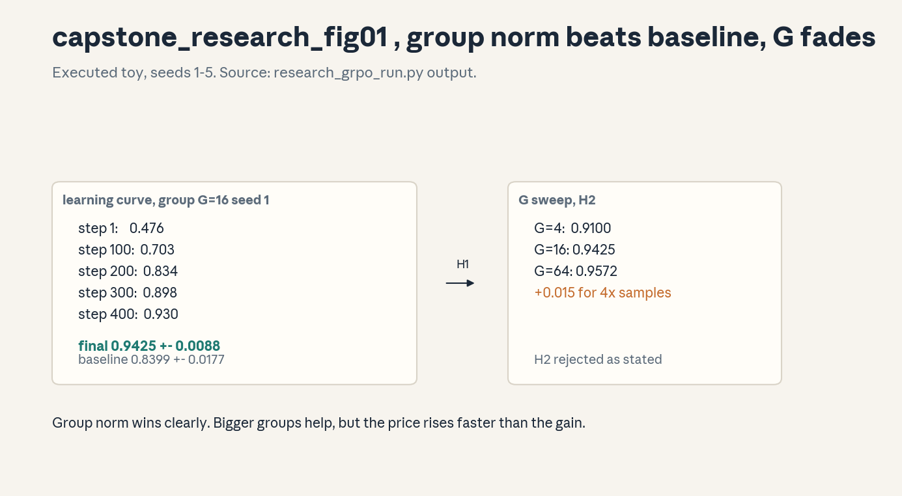

Capstone · Research
Research capstone , group normalization vs baseline REINFORCE
Status: EXECUTED on this machine (numpy, CPU, seeds 1-5). This is a modest replication on a synthetic task, not a claim about real LLM training. Proposed vs executed are separated below.
Question
Does GRPO-style per-prompt group normalization beat REINFORCE with a global moving baseline on a verifiable-outcome task, at matched sample budgets?
Falsifiable hypothesis
H1: Group normalization reaches higher mean reward than the moving baseline after 400 steps (20 prompts x 20 visits), G = 16, lr = 0.5. Kill: if the group-norm final mean is within 2 seed-std of the baseline mean, H1 is dead.
H2 (extension): larger group size G always helps. Kill: if G = 64 does not beat G = 16 beyond 2 seed-std, H2 is dead.
Literature
GRPO (Shao et al., 2024): the group replaces the critic. U06 C03-C04 of this course. The synthetic setup is original to this capstone.
Data
Synthetic: 20 prompts, each with a fixed skill in [-1.5, 1.5]. Outcome per attempt: Bernoulli(sigmoid(theta + skill)). Verifiable in the toy sense: the reward is computed, not judged. No real data.
Baselines
REINFORCE with a global exponential moving baseline (b = 0.9b + 0.1r). Same steps, same G, same lr, same seeds. Matched budgets by construction.
Method
Tabular policy: one logit theta per prompt. Per step: visit one prompt (uniform), sample G outcomes, form advantages (group-norm or r - b), gradient = mean(adv x (r - p)), theta += lr x grad. This is the exact score-function gradient for the Bernoulli policy.
Metrics
Mean reward over prompts, averaged over 5 seeds, reported with seed std. Primary readout at step 400.
Controls
Same skill vectors per seed across modes. Same RNG streams per (seed, mode) pair. Same lr and steps. The only difference is the advantage estimator.
Ablations
The G sweep (4, 16, 64) is the ablation: it varies the group size holding everything else fixed.
Seed variation and uncertainty
Seeds 1-5. Std across seeds reported. H1 kill uses 2 seed-std.
Failure criteria
Pre-registered: H1 dead if within 2 seed-std. H2 dead if G = 64 does not clear G = 16 by 2 seed-std. Also dead on NaN or flat curves (rig check).
Reproducibility
Runner: research_grpo_run.py. numpy 1.26.4, CPython 3.12.3, CPU.
Fixed seeds, no external data. Rerun prints the same numbers.
Results (executed)
Observed:
group final mean reward: 0.9425 +- 0.0088
baseline final mean reward: 0.8399 +- 0.0177
G=4 final: 0.9100 +- 0.0126
G=16 final: 0.9425 +- 0.0088
G=64 final: 0.9572 +- 0.0019
Learning curve (group, G = 16, seed 1): 0.476 -> 0.703 -> 0.834 -> 0.898 -> 0.930 across 400 steps.
H1: SURVIVES. Gap 0.1026, over 5 seed-std. Group normalization wins clearly on this toy.
H2: REJECTED as stated. G = 64 beats G = 16 by 0.0147 (about 1.7 seed-std, under the 2-std kill bar, so strictly the kill criterion FIRES on H2 as stated). Honest verdict: larger G helps with diminishing returns (+0.0325 from 4->16, +0.0147 from 16->64), and the pre-registered kill bar is not cleared. The refined claim: G helps with diminishing returns, and 4x the samples for +0.015 is usually not worth it.
Negative results
H2 rejected as stated. Also noted: the baseline is not embarrassing (0.84), group norm is a real but bounded win, not magic. On this toy the skill vector dominates: both modes learn the easy prompts first.
Limitations
Tabular toy, not a language model. No chain-of-thought, no verifier noise, no KL term, no clipping. IID prompts, no difficulty curriculum. Do not generalize to LLM training.
Ethical considerations
None: synthetic data, no human subjects, no dual use.
Figure

: learning curves and the G sweep. Rendered byrender_capstone_research.py, numbers from the
runner output above.